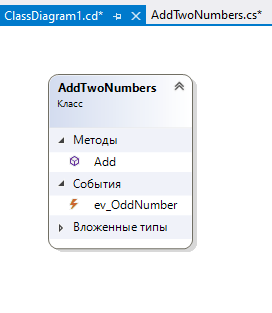
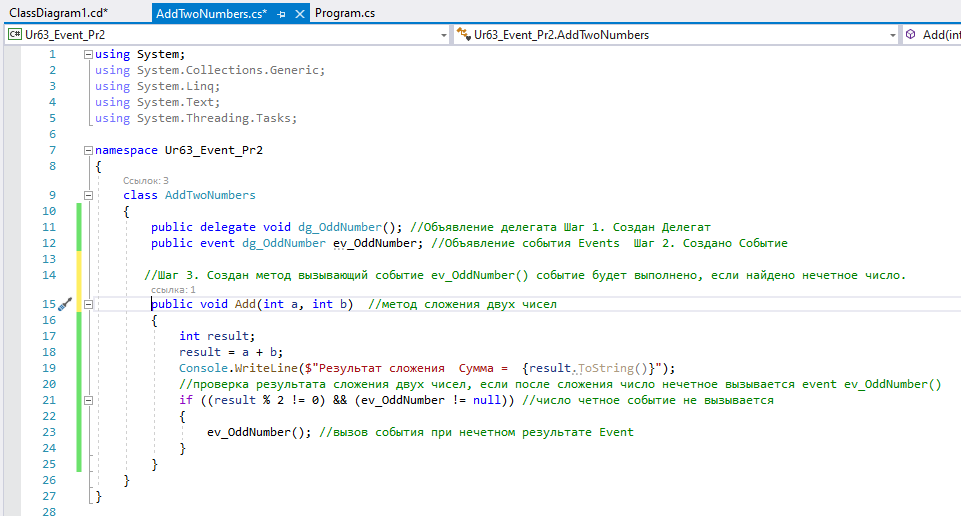
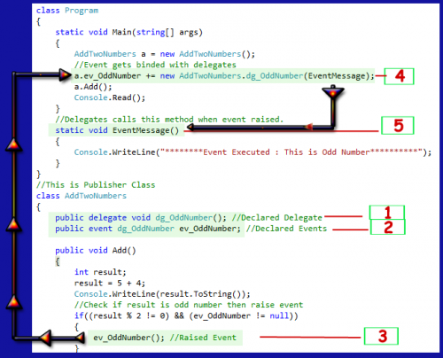
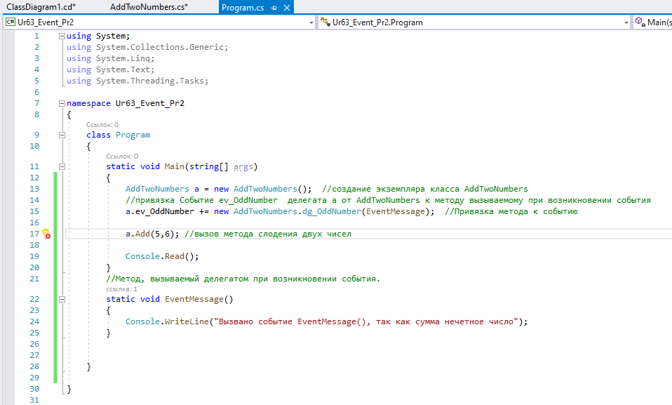
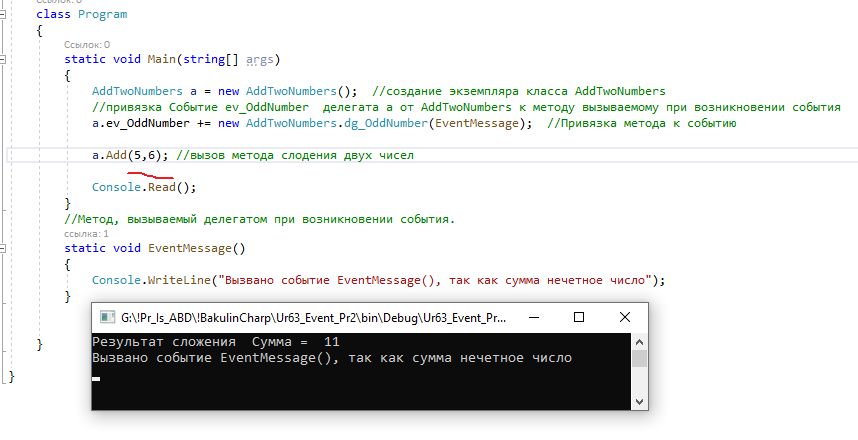

События - это не просто действия пользователя. Существуют события разного типа, инициируемые различными объектами.
Например:
- Когда вы щелкаете мышью - это события щелчка мыши.
- Когда вы нажимаете любую клавишу на клавиатуре – это события нажатия клавиш
- Когда вы обновляете свою веб - страницу – это события загрузки страницы
- При перемещении курсора мыши — это наведение мыши события и т.д.
Поэтому, когда вы предпринимаете какие-либо действия, такие как нажатие клавиши, движения мыши, щелчки и т. д., возникает событие.
Например, вы заполнили онлайн - форму и нажмите на кнопку Отправить.
-
В фоновом
button_click()режиме событие возникло. -
Это событие вызывает и выполняет
связанную функцию
Submit_Click(). - Эта функция обрабатывает ваш запрос и отправляет информацию о странице в базу данных.
Как события работают с делегатами?
Делегаты используются для ссылки на метод. Событие связывается с обработчиком событий с помощью делегатов. Когда событие возникает, оно посылает сигнал делегатам, и делегаты выполняют соответствующую функцию.
Что такое модель издатель-подписчик?
В любом случае есть две части программы обработки событий. Одна часть является издателем, который содержит определение событий и делегатов, а другая часть - подписчиком, который принимает событие и предоставляет обработчик событий.
- Событие создается с помощью ключевого слова event.
- Событие не имеет возвращаемого типа и всегда является пустым.
- Все события основаны на делегатах.
- Все опубликованные события должны иметь объект прослушивания.
- Все события должны быть определены, начиная с ключевого слова «On».
Давайте разберемся во всех этих теориях на
примере программирования
Перед просмотром примеров программирования вы
должны знать последовательные шаги для
управления событиями.
Шаг 1: Определение
делегата
Шаг 2: Определение
события с тем же именем делегатов.
Шаг 3: Определите
обработчик событий, которые отвечают при
возникновении события.
Шаг 4: Вы
должны иметь метод, готовый для делегатов.
Простой пример сложения двух чисел. Если сумма нечетна, создается событие, извещающее пользователя об этом. Если сумма четное число вызов события не выполняется.

Создаем класс с определением делегата и события с тем же именем делегатов.

Эта программа просто добавляет два числа. Единственное условие — если сумма чисел нечетна, он запускает событие, которое печатает сообщение с помощью делегатов.

Смотрите на рисунок. На коде есть какая-то маркировка. Мы пройдем через маркировку и разберемся в самом процессе.
- Созданный Делегат
public delegate void dg_OddNumber();
2. Создано Событие
public event dg_OddNumber ev_OddNumber;
3. ev_OddNumber() событие
будет выполнено, если найдено нечетное число.
4. В классе AddTwoNumbers есть
функция void
Add(), которая добавляет два числа. Если
сумма числа Нечетна, то оно подняло ev_OddNumberсобытие
основная функция, это ev_OddNumberобработчик
событий вызывает делегат
a.ev_OddNumber += new AddTwoNumbers .dg_OddNumber(EventMessage);
5. В основной программе создадим функцию, вызываемую событием.

Если сумма нечетное число, результат:
